Deals don’t fail.
Visibility does!
An AI-driven decision-support timeline for syndicated-loan finance - turning deal activity into decisions, with an agent that acts on them.
Try the Live Demo (opens in a new tab)The Product
A real fintech client - syndicated-loan, cross-organizational deal operations.
My Role
Product Designer - domain research, UX strategy, and end-to-end UI design.
Scope
The decision-support timeline - my design end to end, from research to hi-fi UI.
Under NDA - every name, screen and data point here was recreated from scratch. Nothing is client material.
The Hidden Cost
of Missing Visibility
Deals don’t slow down because of decisions. They slow down when no one knows what’s missing - or who owns it.
On a syndicated-loan fintech platform for cross-organizational trading data, teams couldn’t answer one question: where does the deal stand? Management asked for confidence and transparency - that brief became the timeline.
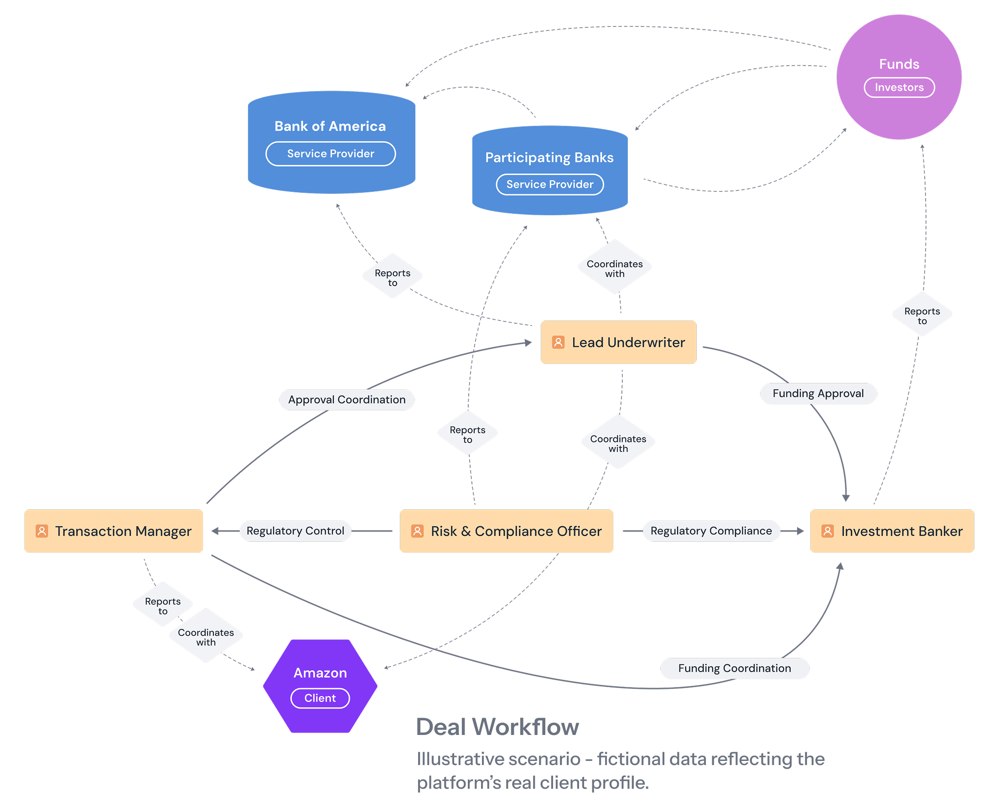
The market’s own math: LSTA data.
Standard is T+7 · 2024 average ≈ 16 days
only ~29% settle within a week
Visibility alone doesn’t solve the problem
Teams Didn’t Need More Data
- They Needed Clarity on What to Act On
PROBLEM
- No visibility across deal stages
- Delays caused by approvals
- Cross-team coordination overhead
DATA
- Dozens of tasks and documents
- Many owners, many dates
- Every status - no priority
DECISION
- What needs action now?
- What’s blocking progress?
- What matters most?
Exploring
Unfamiliar Domain
- Mapped syndicated transactions: phases, documents, approvals
- Analyzed where manual workflows create bottlenecks
- Charted roles and approval responsibilities across organizations
- Benchmarked the tools deal teams actually use

What Existing
Tools Miss
No tool combines Gantt-grade planning UX with loan-market semantics - that became the design opportunity.
The market’s servicing backbone - used by 21 of the top 25 syndicated lenders.
Industry-backed real-time agent-data platform (J.P. Morgan, BofA, Citi).
The market-standard platform for settling syndicated loan trades between institutions.
Roles
I evaluated each role through 4 lenses:
Insights
Each role has unique needs within the transaction. One requires full control over deal progress, another prioritizes certainty in terms and commitments, a third focuses on regulation and risk, while the last demands full transparency in financing and financial conditions.
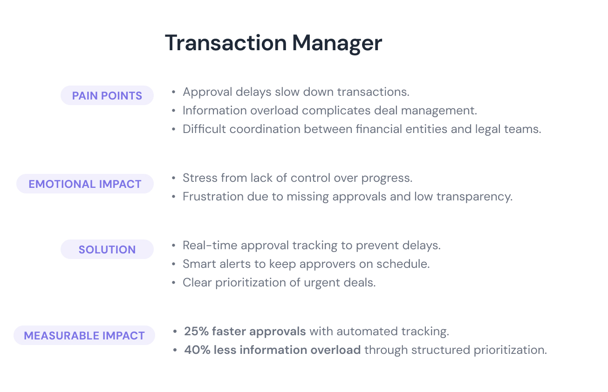
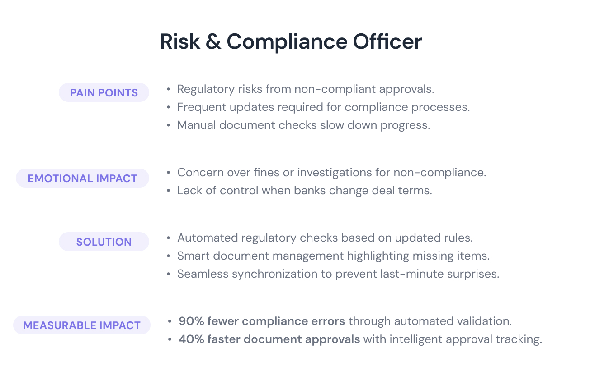
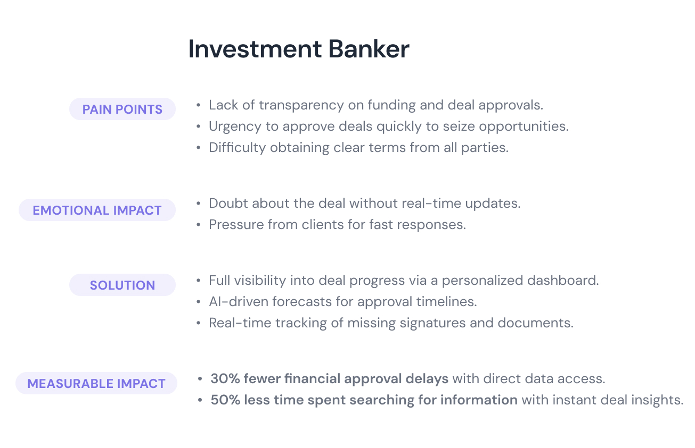
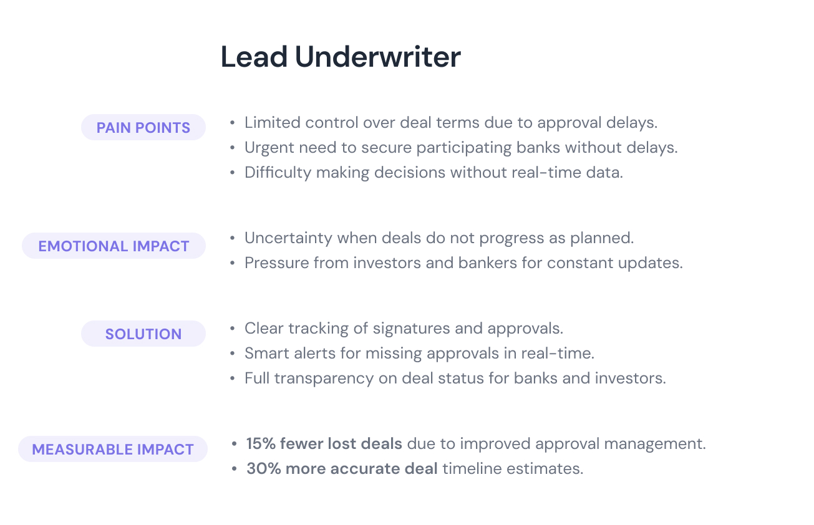
Coordinating Work
Across Teams
Designed around the Transaction Manager - the role that owns execution across banks, legal and compliance - with tailored views for underwriters, compliance officers and bankers.
Each role contributes tasks and approvals.
The timeline connects everything into one coordinated system.
The object model behind the timeline (OOUX): phases, tasks, documents and signatures as connected objects.
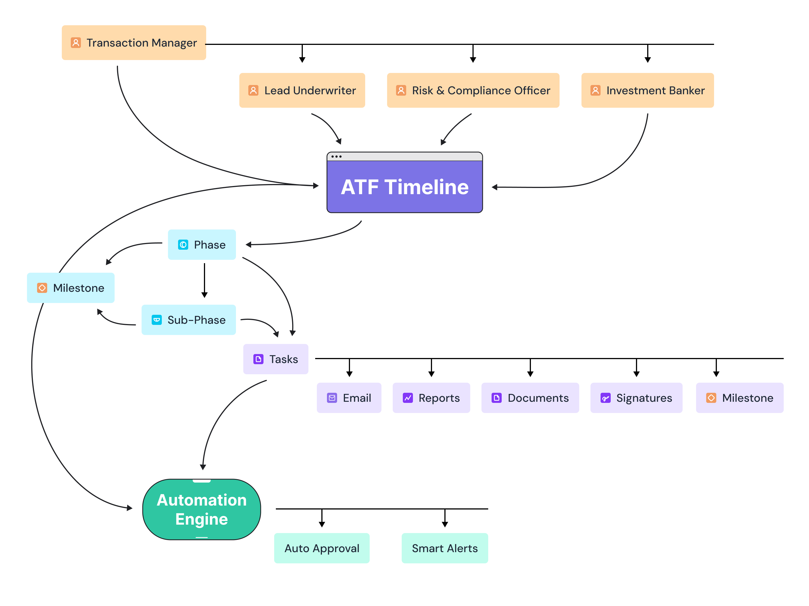
What Needs
Action Now
A deal is months of dependent work under deadlines - exactly what a Gantt shows best. I built the solution as a Gantt: phases, dependencies and risks on a single time axis. No market tool offers this view.
Phases
Structure the process.
Teams
Every role works on the same shared time axis.
Decisions
Highlight what needs attention and suggest next steps with AI.
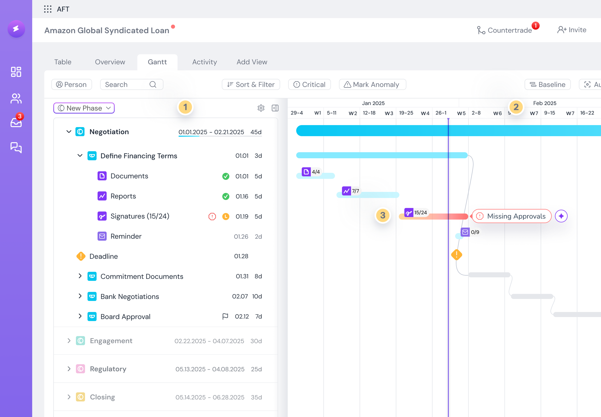
Blockers & Risks
What’s blocking progress?
AI identifies blockers that require action.
What’s at risk?
Predicted risks help teams act before delays happen.
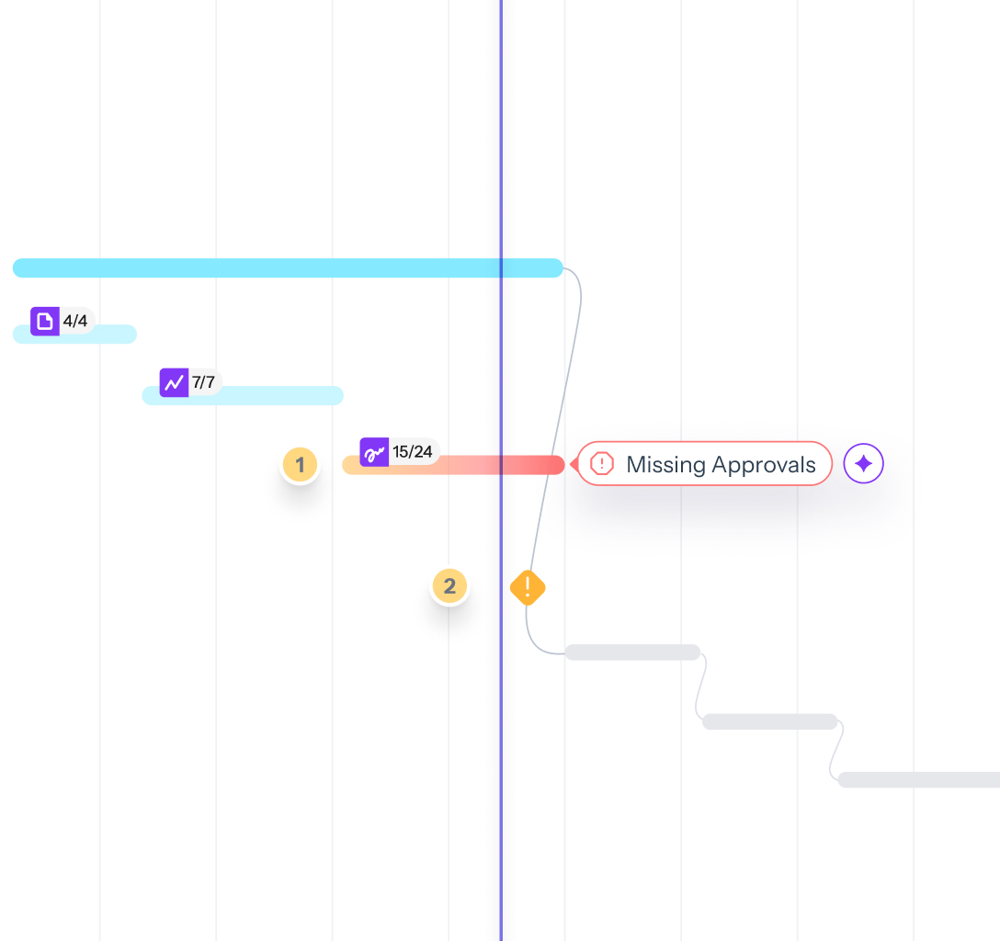
Early Explorations -
Reconstructed
Direction A
Flat task list. Rejected: months of deal work became an endless scroll; no sense of phase or progress.
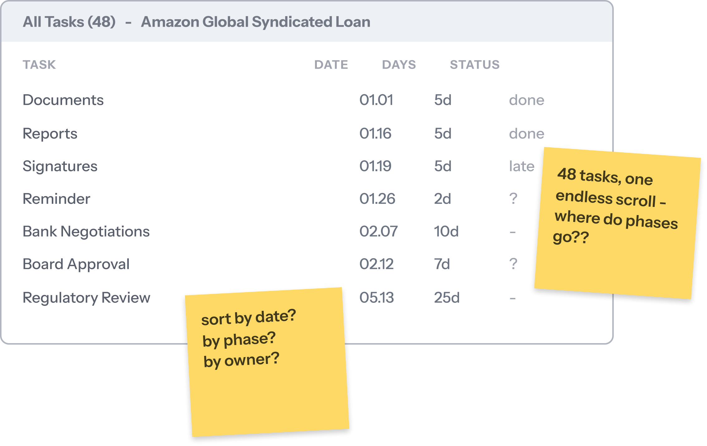
Direction B
Alerts in a separate panel. Rejected: problems lost their time context; users had to map each alert back to the timeline themselves.
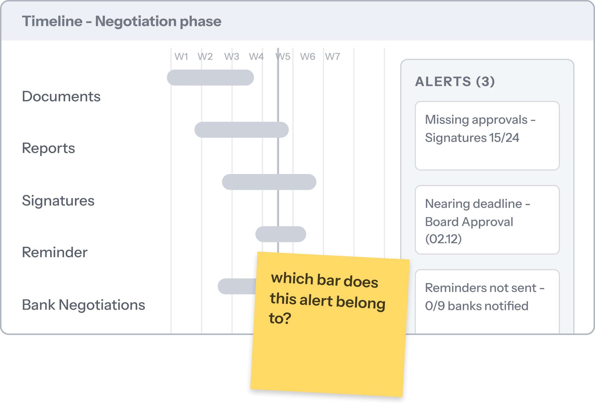
What I Chose
& What it Cost
Every decision below began as one of those explorations.
Hierarchy over
flat list
Considered: a flat task list - familiar, zero learning curve.
Alerts inside the
timeline
Considered: a separate alerts panel - a cleaner Gantt.
Hidden by
default
Considered: exposing every action and field - more discoverable.
From Showing Risk
to Proposing Action
I mapped the agent’s autonomy to its confidence - human-in-the-loop by design: it proposes when sure, steps back when unsure, and automates only what you approved in advance. Calibrated trust.
The result: it earns trust one rung at a time, and never acts where you can’t see it or stop it.
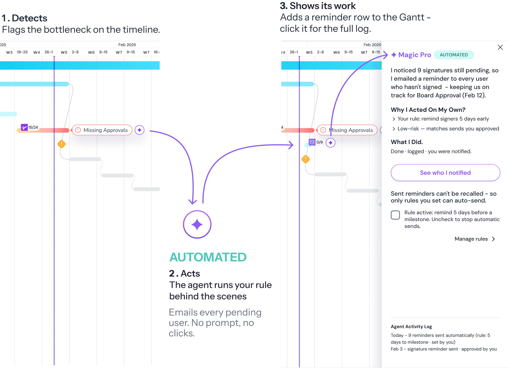
Not Every Decision
Is That Simple.
The agent proposes a complete action.
- Proposes the action, backed by evidence
- Shows the cost of ignoring it
- Waits for you: Approve · Edit · Dismiss
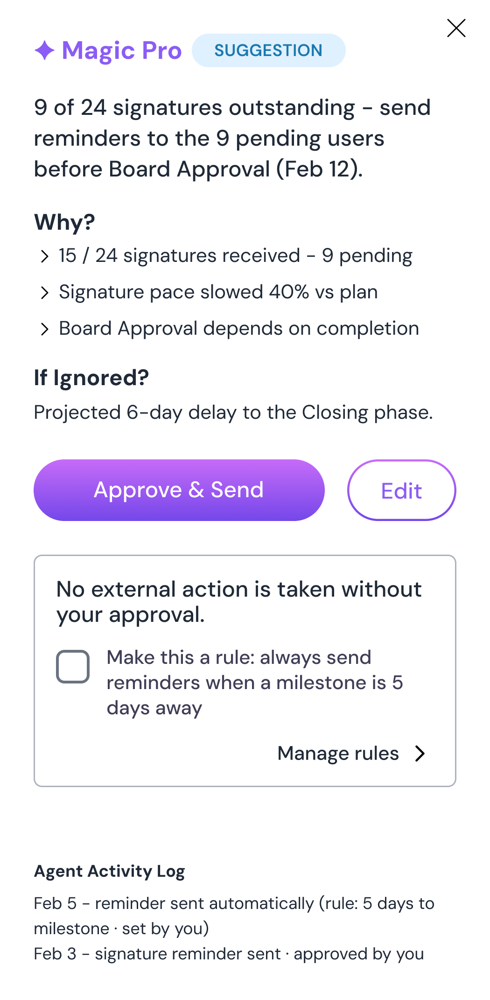
The agent steps back and stays honest.
- Not enough signal - it doesn’t guess
- Flags the risk and explains why
- Nothing is sent
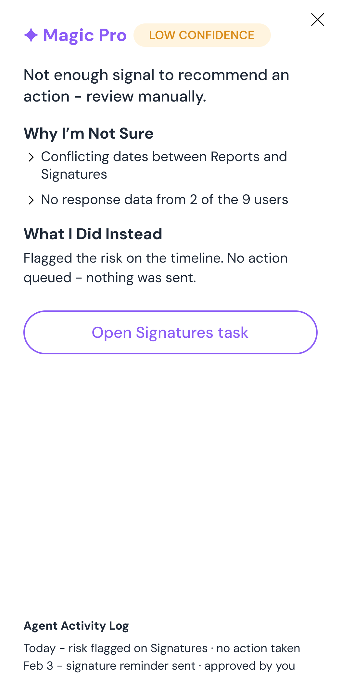
Projected Impact -
What Changes When The Timeline Goes Live
- These are projected design targets, benchmarked against McKinsey’s 20-50% productivity-uplift range for modernized syndicated-loan operations.
I Learned
Good design respects how each role works - not averaging everyone into one “user”.
I learned to break a high-stakes, unfamiliar domain into small steps I could verify.
The biggest lesson: teams don’t need more information - they need to know what to act on.
 Thank
ThankYou

When every minute counts -
Turn complex data into confident decisions.
AI decision support for incident management.